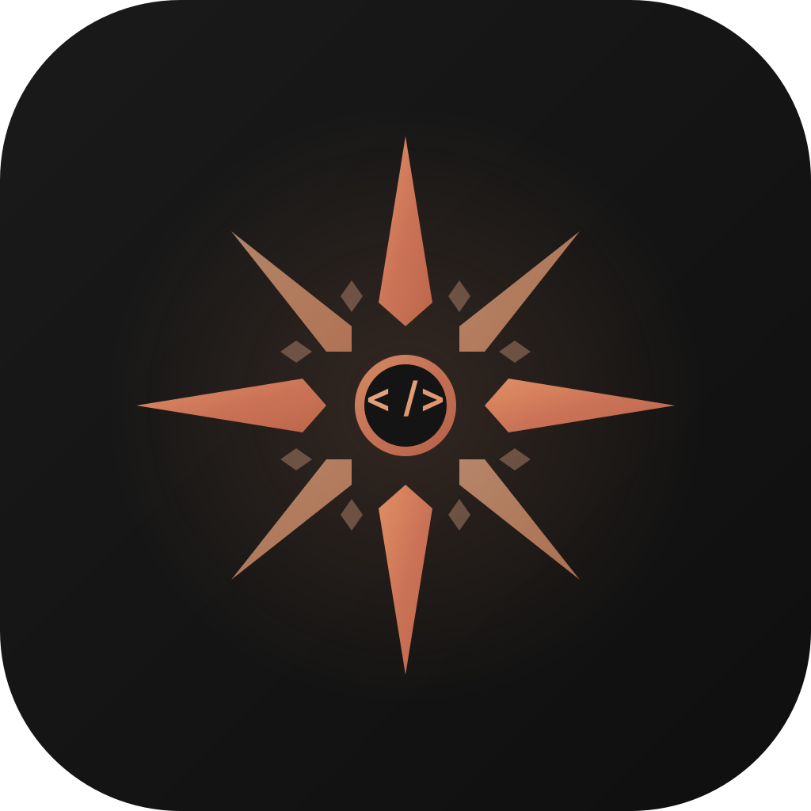

A conversational desktop app for Claude Code. Like claude.ai, but with the power to execute — file edits, terminal commands, live preview, all in one place.
macOS (Apple Silicon) · Signed & notarized · Free & open source
Streaming responses with full markdown rendering, syntax highlighting, and code block copy. Like chatting with Claude, but it can act.
See your project structure with live badges showing which files Claude read, created, or edited. Folders color-code to show activity.
Auto-detects dev servers, renders HTML/Markdown/images, and sandboxes JSX/TSX components — all inline.
Uses your existing Claude Pro or Max subscription through Claude Code. No separate billing or API costs.
Automatically matches your system preference. Looks great either way.
Responsive web UI with swipe gestures, haptic feedback, and PWA support. Access from your phone over the network.
Download from nodejs.org, or install via Terminal: brew install node
Run npm install -g @anthropic-ai/claude-code in Terminal, then run claude to sign in with your Claude Pro or Max account.
Grab the DMG from the link above, open it, and drag Pilot to Applications. Or run from source (see below).
Launch Pilot, pick a project folder, and start chatting. Claude can read, write, and run anything in your project.
git clone https://github.com/alexcbruns-lang/pilot.git cd pilot && npm install cd frontend && npm install && npm run build && cd .. node backend/server.js
Then open localhost:3001 in your browser. No Electron needed.